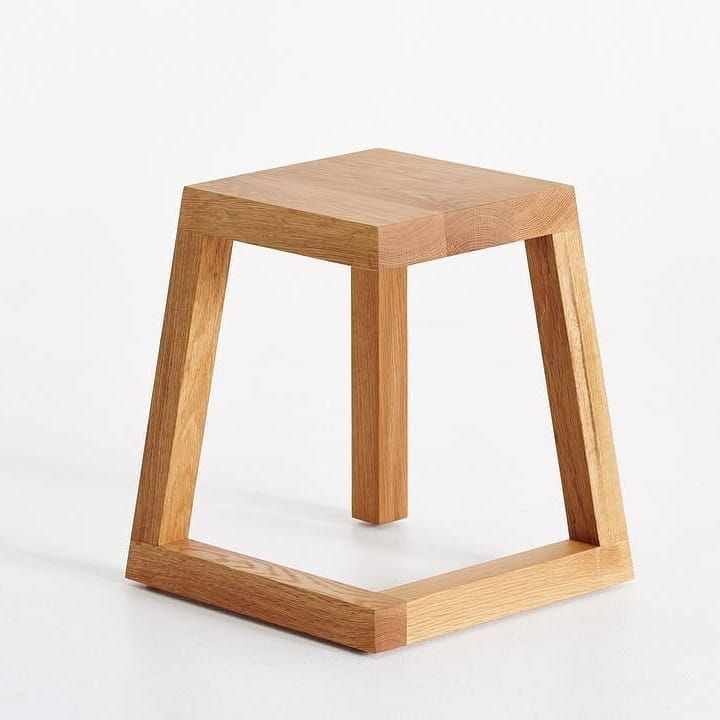
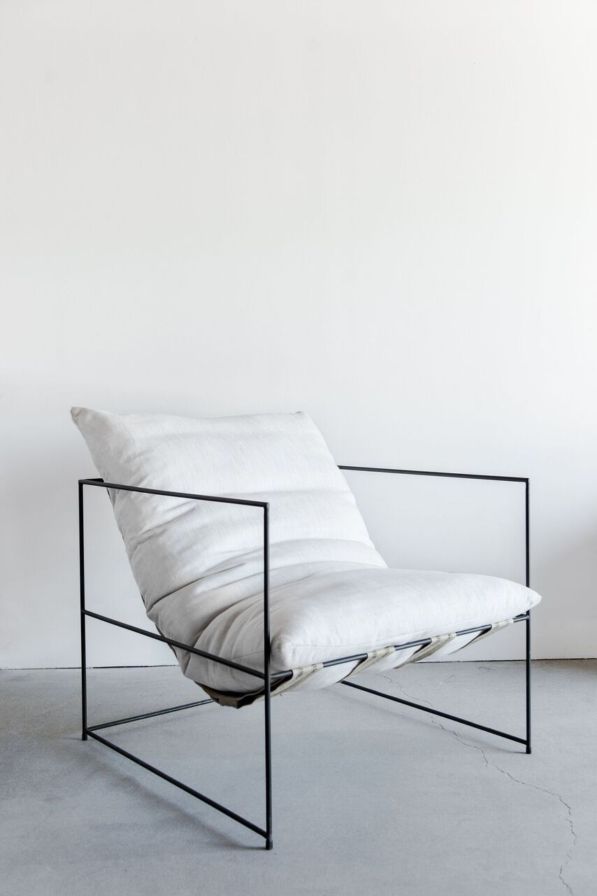
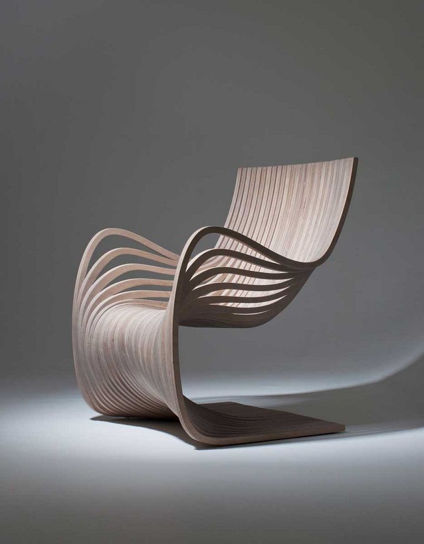
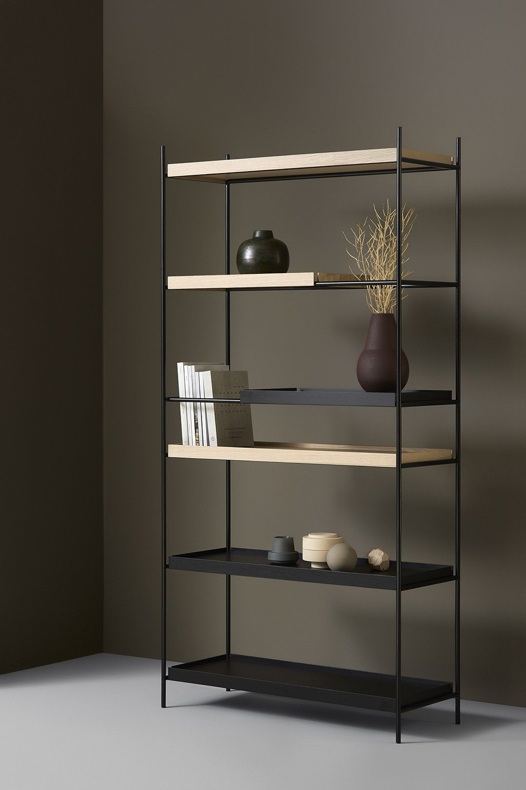
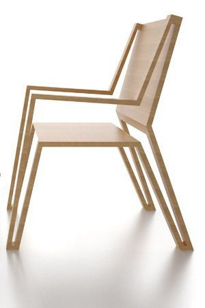
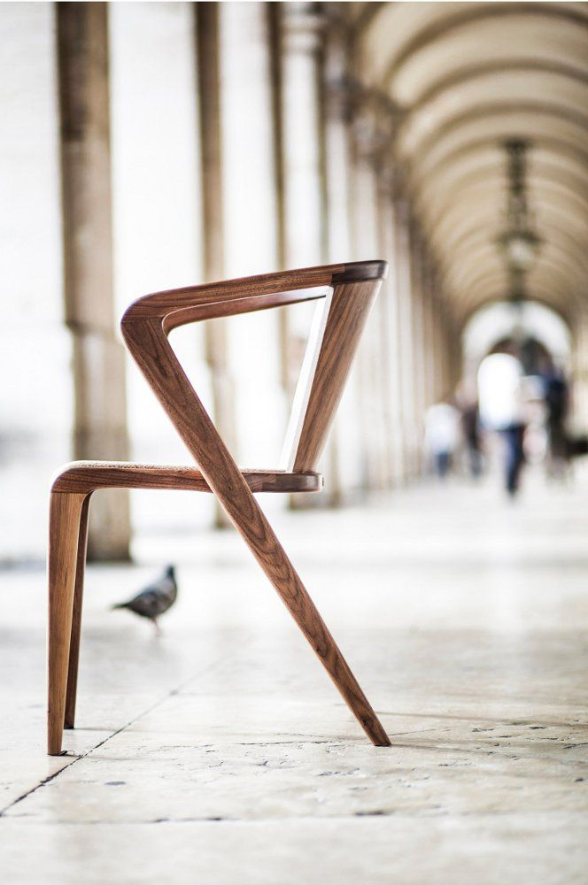
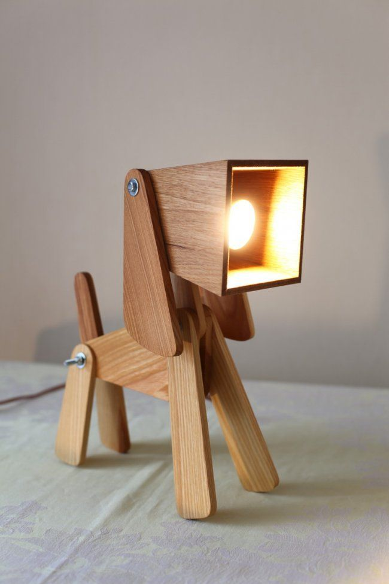
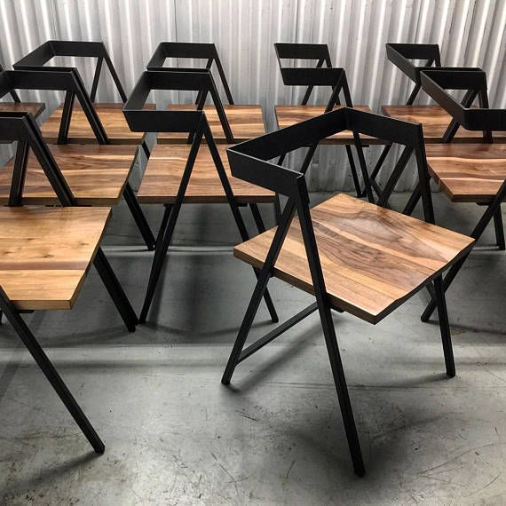
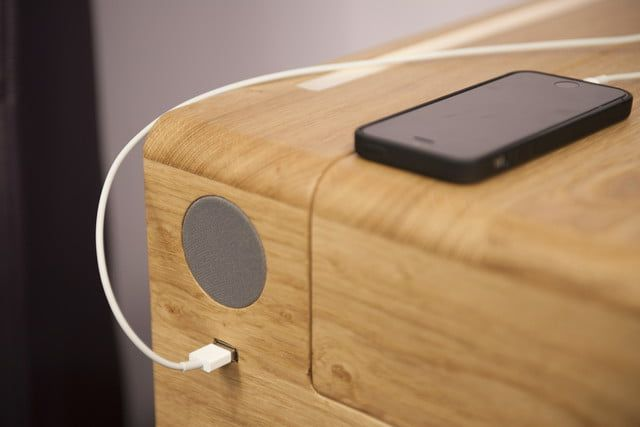

Steam-bent oak, splayed like an A-frame. No hardware shows.

Solid oak, blackened steel, bent ply. Each piece keeps its grain, its joints, and its own shadow — nothing veneered over.

A joint should be legible. A leg should show where the load goes. We finish for touch, not for gloss — the grain stays the loudest thing in the room.

Steam-bent oak, splayed like an A-frame. No hardware shows.

Blackened steel holds oak in tension — the frame is the drawing.

Turned legs, a seat worn smooth by hand before it ships.



